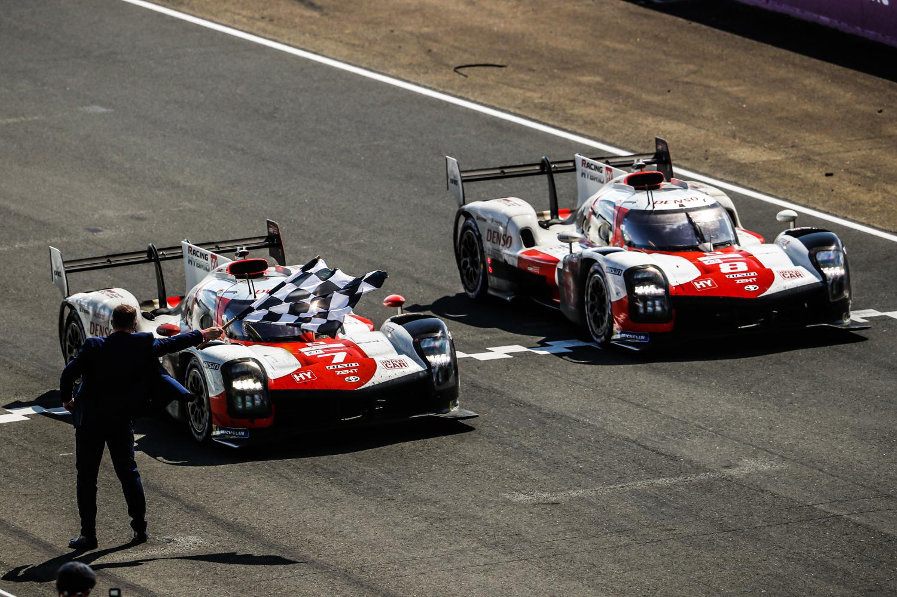

Oto lista zwycięzców wyścigu 24h Le Mans w ostatnich 15 latach:
2008: Audi Sport North America - Audi
2009: Peugeot Sport Total - Peugeot
2010: Audi Sport Team Joest - Audi
2011: Audi Sport Team Joest - Audi
2012: Audi Sport Team Joest - Audi
2013: Audi Sport Team Joest - Audi
2014: Audi Sport Team Joest - Audi
2015: Porsche Team - Porsche
2016: Porsche Team - Porsche
2017: Porsche Team - Porsche
2018: Toyota Gazoo Racing - Toyota
2019: Toyota Gazoo Racing - Toyota
2020: Toyota Gazoo Racing - Toyota
2021: United Autosports - Oreca
2022: Toyota Gazoo Racing - Toyota
Historia wyścigu Le Mans obfituje w legendarne zwycięstwa i niesamowite historie. Wielu producentów samochodów zdobyło sławę dzięki triumfom na tym torze, w tym marki takie jak Audi, Porsche, Toyota czy Ferrari. Wyścig Le Mans jest również znany z rywalizacji pomiędzy różnymi klasami samochodów, takimi jak prototypy LMP1, LMP2 oraz samochody GT.
Zwycięstwo w Le Mans wymaga nie tylko szybkości, ale także niezawodności i strategicznego podejścia. Zespoły muszą przetrwać ekstremalne warunki na torze przez 24 godziny nieustannej rywalizacji, konieczne jest doskonałe przygotowanie samochodu i umiejętność dostosowania się do zmieniających się warunków pogodowych.
